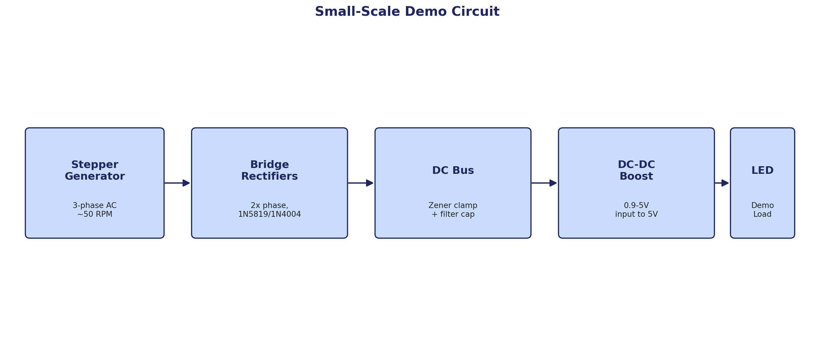

Small-Scale Demo Model
Proving the architecture on a desktop.
A hand-built, low-power stand-in for the full 10kW system — a 3D-printed turbine spun by a desk fan, driving a stepper-motor alternator through the same rectify-regulate architecture at a fraction of the scale.

Demo Circuit
Stepper-motor alternator → bridge rectifiers → zener-clamped DC bus → DC/DC boost → LED load. A reduced-power analog of the full architecture above.

Turbine Rotor — Savonius Design
Curved-scoop blades were chosen over flat panels for omnidirectional self-starting — the rotor spins from wind in any direction without needing to face into it.
| Parameter | Value |
|---|---|
| Rated Power | 10 kW |
| Alternator Output Range | 50–500 V AC, 3-phase, variable frequency |
| Grid-Tie Output | 240 V AC, 60 Hz |
| BESS Compatibility | Yes, via regulated DC bus |
| Protection | Overcurrent, overvoltage, dump load |